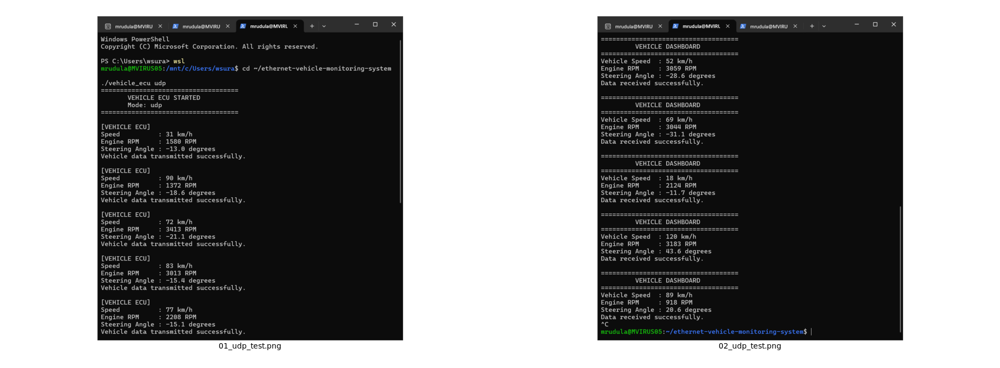
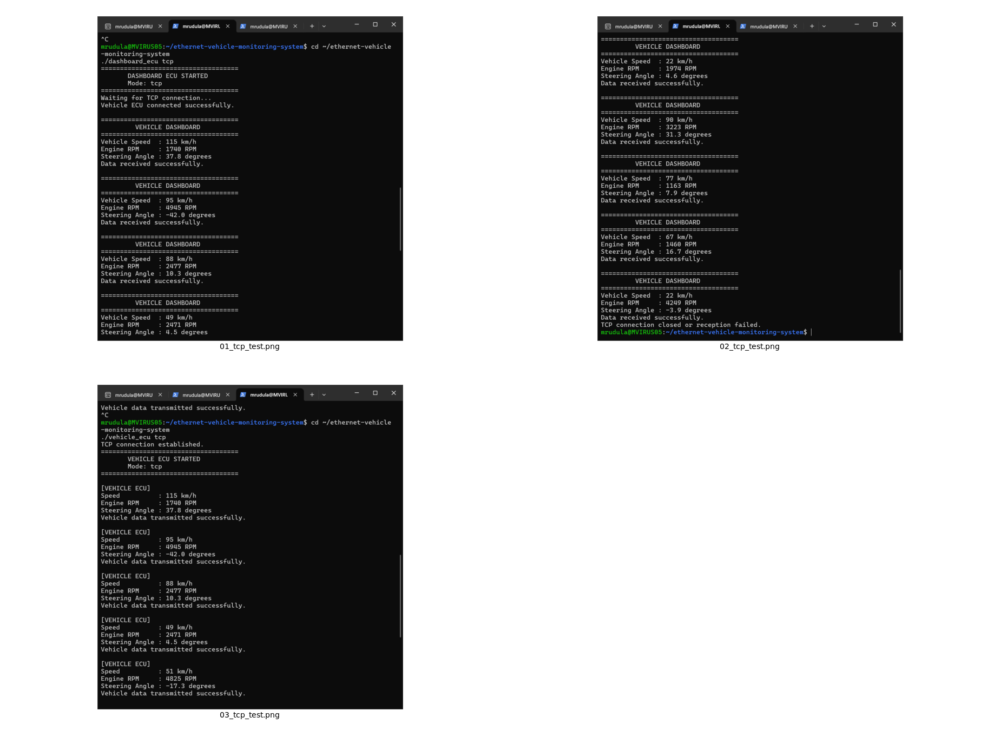
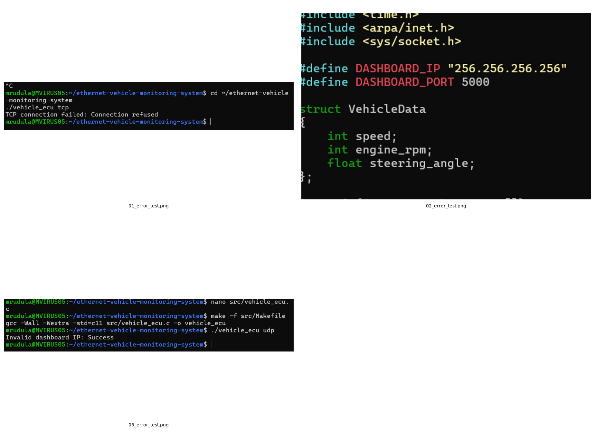
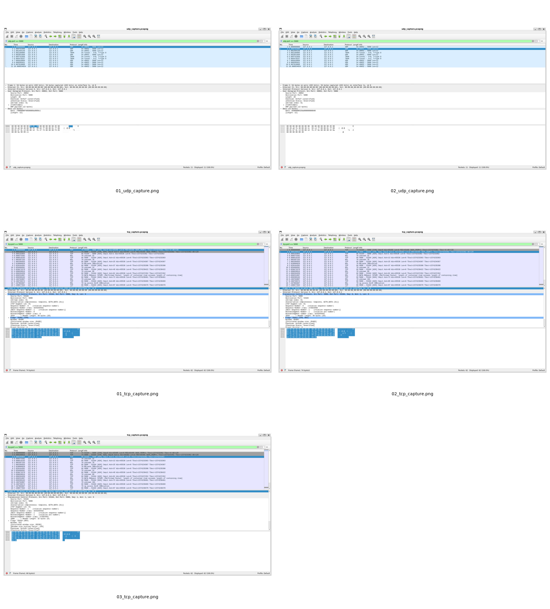

Development of an Ethernet-Based Vehicle Monitoring System using Linux Socket Programming
Ubuntu 22.04.5 LTS | GCC 11.4.0
This report documents the testing and validation of a vehicle monitoring system developed using Linux socket programming in C. The system consists of a Vehicle ECU that generates vehicle parameters and a Dashboard ECU that receives and displays them.
| Parameter | Configuration |
|---|---|
| Operating System | Ubuntu 22.04.5 LTS (WSL2) |
| Programming Language | C |
| Compiler | GCC 11.4.0 |
| Communication Interface | Linux IP sockets |
| Network Interface | Loopback (lo) |
| IP Address | 127.0.0.1 |
| Port Number | 5000 |
| Packet Analysis | Wireshark / TShark 3.6.2 |
| Test ID | Test Description | Expected Result | Observed Result | Status |
|---|---|---|---|---|
| TC01 | Compile both ECU programs | Successful compilation without errors | Both programs compiled successfully | PASS |
| TC02 | UDP communication | Dashboard receives vehicle data | Vehicle parameters received successfully | PASS |
| TC03 | TCP communication | TCP connection established and data received | Connection established and data received | PASS |
| TC04 | 60-second UDP transmission | Continuous transmission and reception | Data transferred during the test period | PASS |
| TC05 | 60-second TCP transmission | Continuous transmission and reception | Data transferred during the test period | PASS |
| TC06 | TCP dashboard unavailable | Connection attempt should fail | Connection refused was reported | PASS |
| TC07 | Invalid IP address | Invalid address should be rejected | Address validation rejected the invalid IP | PASS |
| TC08 | Wireshark UDP analysis | UDP packets should be visible | UDP traffic to port 5000 was captured | PASS |
| TC09 | Wireshark TCP analysis | TCP handshake and data should be visible | Handshake, data and connection closure were captured | PASS |
The Vehicle ECU and Dashboard ECU were executed in UDP mode. The sender transmitted vehicle parameters using sendto(), and the receiver obtained them using recvfrom(). The Dashboard ECU displayed the received speed, engine RPM and steering angle.
The UDP capture contained 11 frames. The UDP length field was 20 bytes, consisting of an 8-byte UDP header and a 12-byte vehicle data payload.
The Vehicle ECU and Dashboard ECU were executed in TCP mode. The Dashboard ECU created a listening socket, accepted the connection, and received vehicle data. The sender transmitted data using send(), while the receiver used recv().
The TCP capture contained 62 frames in total. It showed the three-way handshake, 28 data-bearing TCP segments, acknowledgement traffic and connection termination.
When the TCP Dashboard ECU was not running, the Vehicle ECU reported a connection-refused error. When an invalid IP address was configured, inet_pton() rejected the address and the program reported invalid dashboard IP.
When the TCP sender was stopped, the receiver detected that the connection had closed. This was expected behaviour.
| Feature | TCP | UDP |
|---|---|---|
| Connection | Connection-oriented | Connectionless |
| Delivery | Reliable, ordered byte stream | No delivery guarantee |
| Retransmission | Handled by TCP protocol | Not provided by UDP |
| Overhead | Higher | Lower |
| Application Use | Reliable data transfer | Low-overhead real-time updates |
The validation tests confirmed that both TCP and UDP socket communication modes work successfully in the tested environment. The Dashboard ECU received and displayed the generated vehicle parameters. Wireshark captures provided evidence of UDP transmission and TCP connection establishment, data transfer and termination.
The following combined screenshots provide visual evidence of the vehicle communication tests, error-handling tests and network packet analysis performed during project validation.



